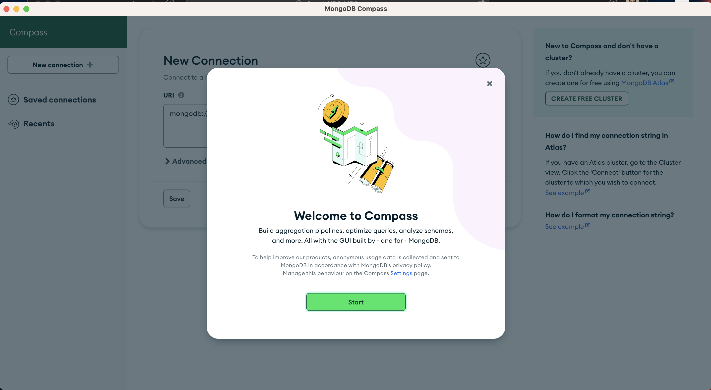
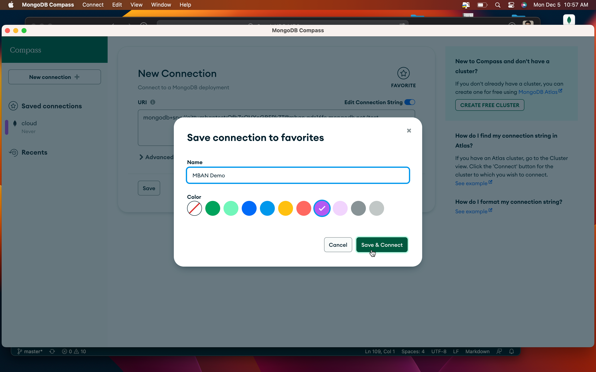
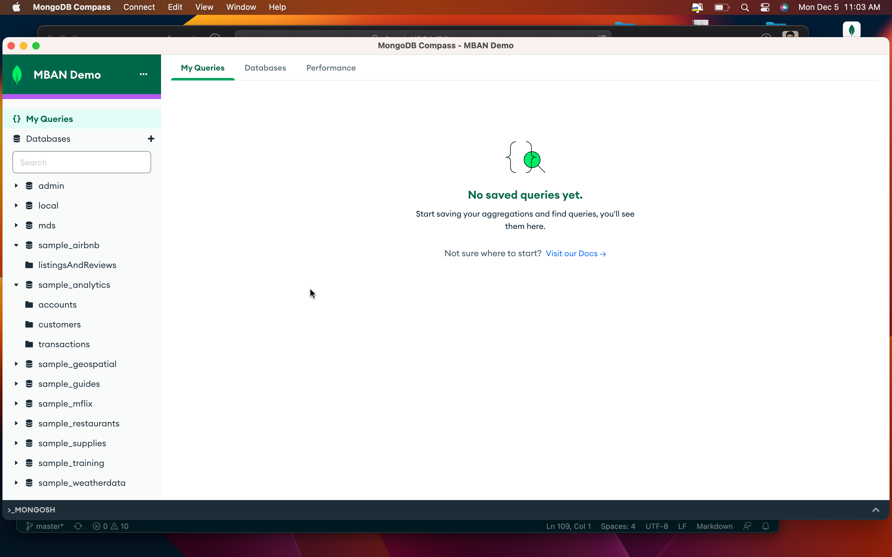

MongoDB installation#
Note
For assignment 3 and learn MongoDB.
The good news is that you don’t have to install anything on your computer. We will be using MongoDB Atlas, which is a cloud-based database service. You can create a free account and use it for the class.
Probably one of the motivations why cloud computing is so popular is that there won’t be any installation pains. You no longer want to deal with any issues that can arise that are more specific to your own computer or wrong setup.
Let’s get to the installation.
Installation videos#
If you are a person who can sometimes go wrong with the installation because you are very new to the IT world and software installations, then watching the following videos in order is the best option, as you can go with me step by step and do the installation.
MongoDB Atlas account creation#

This video is in me showing you how to setup MongoDB atlas. In this video, you will be getting information on the following things.
Just me talking - not sure why it took 2 minutes (00:00 - 01:50)
Creating an account in MongoDB Atlas (01:50 - 05:45)
Creating a cluster/Deploying a database (05:45 - 08:50)
Setting up username and password (08:50 - 10:35)
Whitelisting IP address (10:35 - 12:50)
Final look at the cluster and see what all we want to connect to (12:50 - 15:15)
The information you want to connect from your jupyter notebook (15:15 - end)
We want to connect from 2 sources: one uses jupyter notebook, and the other uses MongoDB Compass. Details on it in the next 2 videos.
Connecting to MongoDB Atlas from jupyter notebook#
This video show you how to connect to MongDB atlas from jupyter notebook. In this video, you will be getting information on the following things.
Passcode:
small intro with cluster, saying we need to connect via jupyter notebook and MongoDB Compass (00:00 - 01:00)
Loading the sample data: You are going to use this data for lectures and lab (01:00 - 02:50)
Just exploring the data we loaded and making sure it is there (02:50 - 04:00)
Collecting information you want to the mongoDB from jupyter notebook - like the hostname, the username (04:00 - 05:45)
Connecting to the database from jupyter notebook/ setting up credentials_mongodb.json file (05:45 - 07:50)
Just running my notebook to show you that it is working (07:50 - end)
Connecting to MongoDB Atlas from Compass#
This video is showing GUI interface for interacting with MongoDB (MongoDB compass). In this video, you will be getting information on the following things.
Opening MongoDB Compass (00:00 - 01:45)
Collecting information you want from MongoDB atlas (the connection URL) to connect from compass (01:45 - 02:45)
Quick exploration of the GUI (02:45 - end)
seeing databases
seeing collections (helpful for lab)
seeing documents
exploring schema (helpful for lab)
analyzing schema (helpful for lab)
Note
*** You can skip following sections if you watched above videos******* Or, if you are a person who is very comfortable with installations, then you can just go through the written instructions in the following sections.
MongoDB Atlas account creation - you can skip this if you watched video
Connecting to MongoDB Atlas from jupyter notebook - you can skip this if you watched video
Connecting to MongoDB Atlas from Compass - you can skip this if you watched video
MongoDB atlas account creation#
You must first set up an account in mongoDB atlas. MongoDB Atlas is a cloud service that MongoDB provides.

After you verify your email address, you will see a screen like the one below. Here are my options, but you can select whatever you want.

Next, it takes me to a screen to create a cluster.
Going with all the default options will be fine, and click on Create Cluster.
If you click on advanced options (you don’t want to), you will see more options like below. I am going with the default options here as well.


Setting up username and password#
After you click on Create Cluster, it will take you to a screen like the one below. It will take some time to create the cluster. In the below screen, you want to set up your username and password.
Important
Don’t forget your username and password. You will need it to connect to the database.
Whitelisting IP address#
Now, you need to add the IP addresses from which your database has access. Here, you will be given access to your laptop’s IP address. Depending on the router, the IP might change, so if you want to make sure that it always accepts connections, you can add 0.0.0.0/0 to the IP, and it will accept connections from any IP address (This is not a good practice, but for now we will do it.).
NOTE: I am also showing you how to add an IP address in the video.

Loading the sample data#
Click on load sample data.
It will show the following popup, and you can click on load sample data.
It will take some time to load the data. You can see the progress on the following screen.

After it is done, you will see a screen like below.
Connecting to MongoDB from compass#
Click on the connect button on the cluster you created. Then select connect with MongoDB Compass.
You will see all the instructions for connecting to the database. This includes downloading the compass application based on the OS and then using the connection string to connect to the database.

After opening the app,
Welcome screen after installation;

Connect to the database you set up in the cloud; paste the connection string here by updating the password, and it is ready to go.

You can save the connection for future use;

It might take some time to complete the connection;

Once the connection is complete, you will be taken to this screen. You can see all the databases there. All these are dummy databases, and we will be using them for the class demo and assignments.

Exploring the schema of the database;
Connecting to MongoDB from your notebook#
Now, we are done with all the deployments. It is time to connect to it. We are connecting it from jupyter notebook.
Add a credentials_mongodb.json file to your directory with the following information.
{
"host": "<your_host>",
"port": 27017,
"username": "<your_username>",
"password": "<your_password>"
}
Then, call the file in your notebook as follows. Please make sure you are using the course environment to run this notebook.
from pymongo import MongoClient
import json
import urllib.parse
with open('credentials_mongodb.json') as f:
login = json.load(f)
username = login['username']
password = urllib.parse.quote(login['password'])
host = login['host']
url = "mongodb+srv://{}:{}@{}/?retryWrites=true&w=majority".format(username, password, host)
client = MongoClient(url)
Accessing databases#
client.list_database_names()
['mds',
'sample_airbnb',
'sample_analytics',
'sample_geospatial',
'sample_guides',
'sample_mflix',
'sample_restaurants',
'sample_supplies',
'sample_training',
'sample_weatherdata',
'admin',
'local']
Accessing collections#
client['sample_mflix'].list_collection_names()
['sessions', 'theaters', 'comments', 'users', 'movies', 'embedded_movies']
Note
More details when I release lecture notes for lectures 7 and 8.
Note
If you want to log back in, you can use this URL
They will go to an inactive state if you don’t use them for some time. You can connect just like how you used to, but it will take some time to boot up.
FAQs (some common installation issues)#
FAQ1: SSL Error#
1) In windows machines, if you get a server timeout error like below
ServerSelectionTimeoutError: ac-6txag5o-shard-00-02.fixvcgm.mongodb.net:27017: [SSL: CERTIFICATE_VERIFY_FAILED] certificate verify failed: certificate has expired (_ssl.c:992),ac-6txag5o-shard-00-00.fixvcgm.mongodb.net:27017: [SSL: CERTIFICATE_VERIFY_FAILED] certificate verify failed: certificate has expired (_ssl.c:992),ac-6txag5o-shard-00-01.fixvcgm.mongodb.net:27017: [SSL: CERTIFICATE_VERIFY_FAILED] certificate verify failed: certificate has expired (_ssl.c:992), Timeout: 30s, Topology Description: <TopologyDescription id: 63d2f9f5ef1f9bd5911a6788, topology_type: ReplicaSetNoPrimary, servers: [<ServerDescription ('ac-6txag5o-shard-00-00.fixvcgm.mongodb.net', 27017) server_type: Unknown, rtt: None, error=AutoReconnect('ac-6txag5o-shard-00-00.fixvcgm.mongodb.net:27017: [SSL: CERTIFICATE_VERIFY_FAILED] certificate verify failed: certificate has expired (_ssl.c:992)')>, <ServerDescription ('ac-6txag5o-shard-00-01.fixvcgm.mongodb.net', 27017) server_type: Unknown, rtt: None, error=AutoReconnect('ac-6txag5o-shard-00-01.fixvcgm.mongodb.net:27017: [SSL: CERTIFICATE_VERIFY_FAILED] certificate verify failed: certificate has expired (_ssl.c:992)')>, <ServerDescription ('ac-6txag5o-shard-00-02.fixvcgm.mongodb.net', 27017) server_type: Unknown, rtt: None, error=AutoReconnect('ac-6txag5o-shard-00-02.fixvcgm.mongodb.net:27017: [SSL: CERTIFICATE_VERIFY_FAILED] certificate verify failed: certificate has expired (_ssl.c:992)')>]>
then you can do the following to resolve the issue.
import certifi
ca = certifi.where()
client = MongoClient(url,tlsCAFile=ca)
instead of
client = MongoClient(url)
Note
You might need to install following from your jupyter if you get error when trying to import certifi
!pip install certifi
FAQ2: connection bounce Error#
2) If you are seeing your connection bouncing then you haven’t whitelisted your IP address. You can do it by following the instructions above.
FAQ3: Cluster has conflicting non-empty namespace.#
3) An error occurred loading sample data: Target cluster has conflicting non-empty namespace with the dataset.
If you get this error when you try to load the sample data, you already have the same database within your Mongo cluster. You can delete the existing data from the database and reinitiate the process. There are many ways in which you can delete it, but the easiest way is to delete it from your mongo atlas. Here are a couple of screenshots to guide you through.
Navigate to the collection and delete all the databases that you see there, like below.
After that, revisit the load data and add sample data like the one below.
If this leads to getting an error like the below, then wait wait wait……… I got this in the process, as it takes some time to clean things up and get back to a consistent state.